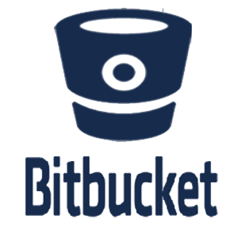
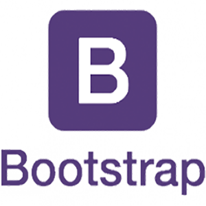
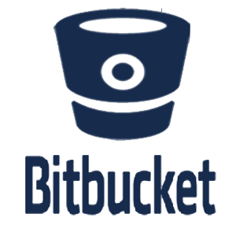
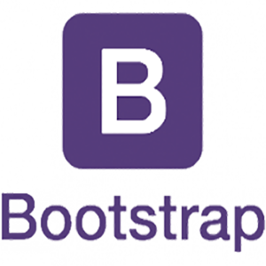

Juan Diego
Fernández Déniz
Desarrollador de Software
Especialista en Front-End
Perfil
Soy una persona abierta, con facilidad para el análisis, un gran sentido de la responsabilidad y me encanta la satisfacción del trabajo bien hecho.
Inscrito en Garantía Juvenil e Incentívate.
Formación
-
Ciclo Superior de Desarrollo de Aplicaciones Multiplataformas
(2016-2017) [I.E.S. El Rincón] -
Ciclo Superior de Desarrollo de Aplicaciones Web
(2014-2016) [I.E.S. El Rincón]


 


